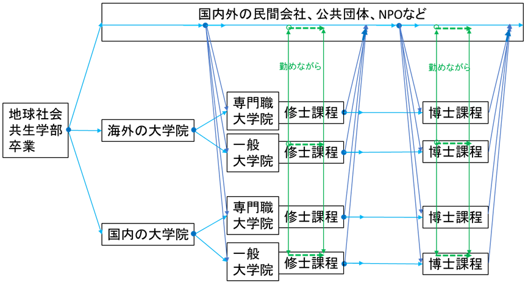

近年、社会のグローバル化にともない、大学院の重要性が増しつつあります。とりわけ地球規模で活動を展開している国際的な機関、会社、団体や、地球的課題の研究を進めている大学、民間研究所などでは、大学院で学んだ人の活躍が大いに期待されています。実際、就職の際には、大学院の学位が要求されることが多くなりました。そこで本学部では、大学院で学ぶことを希望する学生の皆さんを支援するべく「海外大学院進学支援室」を設立し、活動を始めました。このウェブサイトでの情報伝達もその一環です。
大学院で学ぶ多様な経路
皆さんには多様な人生経路が広がっています。大学院で学ぶといっても多様な経路があり、その主な経路を図１に描いてみました。

図１ 大学院で学ぶ、様々な経路
これらの経路を大きく分けると、まずは社会で一旦、働いてから大学院に進む経路１と、卒業後、直ちに大学院に進む経路２があります。また、海外の大学院で学ぶか、国内の大学院で学ぶかの選択肢があります。経路１を選ぶにせよ経路２を選ぶにせよ、本学部としては、学部設立の主旨から、海外の大学院で学ぶことを推奨しています。
海外大学院で学ぶための準備
大学院に合格するためには、入念な準備が必要となります。国によっても入試システムが大きく異なりますから、準備に２年間ぐらいをかけた方がよいでしょう。具体的には、GPA、英語力、基礎学力などで最低条件を課す大学院が多くありますから、日ごろのからの学習が重要となります。また、授業以外の活動も総合的学術達成度として評価の対象となりますから、その対応も必要となります。これについては、次に説明するセミナー「海外大学院留学の準備」で詳細に指導いたします。
GSC海外大学院留学支援セミナー
大学院を含むキャリアパスや、具体的な大学院情報を提供するため、外部の専門家を招いてセミナーを行います。現在まで、二種類のセミナーを行っていますが、さらなる企画を練っています。
「グローバルに活躍したいあなたへ」
世界はどんな人材を求めているのか、大学生が今やっておくべきこと、これからやるべきことの講義と、そのワークショップを行います。
「海外大学院留学の準備」
海外大学院進学準備のための必要な準備項目、準備の仕方、準備のペース、そして最も大切な「入学審査官の視点」などジェネラルな知識を伝授します。
海外大学院で学ぶ姿勢
大学院に入学できたとしても、授業についていけなければ意味がありません。大学院では、基本的に学生主体の参加型授業です。単に講義を聴くだけではなく、文献のリーディングや批判的に課題（主にエッセイ）を作成することが重要になります。また、事例分析を行ったり、実際の事業企画のプレゼンや質疑など、日本以上に積極的に授業に貢献することが求められます。したがって、大学院の授業にスムーズに入っていけるように、日本にいる間から授業で積極的に発言するなどして事前練習をしておくことが重要となります。
留学費用
国によっては、授業料がかなり高い場合があり、就労も法律上非常に制限されていることから、海外の大学院で学ぶ奨学金を得るための努力も必要となります。これについては、セミナー「海外大学院留学の準備」でも扱いますが、さらには、下記の奨学金情報を積極的に集めて、適切な奨学金に応募することをお勧めします。
奨学金情報
留学費用の項で述べましたように、海外大学院で学ぶ要に奨学金があります。今後、この情報を収集し、お伝えして行きますが、まずは、日本学生支援機構 Japan Student Services Organization (JASSO)の奨学金ガイド
http://ryugaku.jasso.go.jp/publication/guidebook/
をお読みください。これは、海外留学を希望している方を対象として作られた日本学生支援機構の留学ガイドブックで、留学の準備方法や、基礎情報、留学経験者の体験記を掲載しています。
また奨学金パンフレット
http://ryugaku.jasso.go.jp/publication/pamphlet/
は、日本から海外の学校へ留学を希望している方を対象とした海外留学奨学金情報をまとめたパンフレットで、2016-2017年版は以下の奨学金情報を掲載しています。
① JASSO奨学金 7種類の奨学金
② 地方自治体奨学金 22団体の奨学金
③ 外国政府等奨学金（国・地域別） 36カ国・地域
④ 民間団体奨学金 48団体
JASSO以外の奨学金としては、進学先の大学、学会、留学先の民間団体の奨学金もあります。
①進学先の大学の奨学
入学前に申請できるものと、在学中に申請できるものがあります。入学前は、こまめに大学のHPを確認するほか、留学受け入れ担当者に直接問合わせて確認するようにしましょう。在学中の申請に関しては、入学後に奨学金説明会などに出席し、最新の情報を常に受け取ることのできる環境を作るよう心掛けましょう。
②学会
所属学会のHPやEmailにて送付される情報をこまめに確認しましょう。
例The British Association for International and Comparative Education
http://baice.ac.uk/about/baice-funding/
③留学学先の行政や民間団体
進学先大学がある地域の役所などに確認しましょう。
例 British Chevening Scholarship
http://www.chevening.org/
Euraxess UK
https://www.euraxess.org.uk/united-kingdom/funding-opportunities
その他の関連サイト：
＜日本学生支援機構（JASSO）＞ 海外留学支援サイト
＜米国＞
在日米国大使館・領事館「米国留学」
https://jp.usembassy.gov/ja/education-culture-ja/study-usa-ja/
アメリカ留学センター「アメリカ留学情報」
https://americancenterjapan.com/study/
＜カナダ＞
カナダ政府「カナダ留学」
http://www.canadainternational.gc.ca/japan-japon/study-etudie/index.aspx?lang=jpn&menu_id=34
EduCanada（English）
http://educanada.ca/index.aspx?lang=eng
＜英国＞
ブリティッシュカウンシル「英国留学」
https://www.britishcouncil.jp/studyuk
＜オーストラリア＞
オーストラリア政府公式留学情報ウェブサイト
http://www.studyinaustralia.gov.au/japan